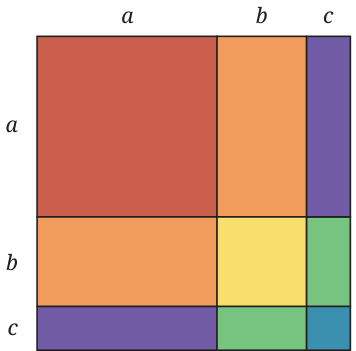
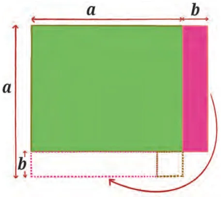

<!DOCTYPE html>
<html lang="en">
<head>
<meta charset="UTF-8">
<meta name="viewport" content="width=device-width,initial-scale=1">
<title>Exercise 4.3 — Exploring Algebraic Identities</title>
<meta name="description" content="Class 9 Mathematics · Exploring Algebraic Identities · Exercise 4.3">
<link rel="icon" href="data:image/svg+xml,<svg xmlns='http://www.w3.org/2000/svg' viewBox='0 0 100 100'><text y='.9em' font-size='90'>📘</text></svg>">
<link rel="stylesheet" href="../../../assets/book.css">
<link rel="stylesheet" href="https://cdn.jsdelivr.net/npm/katex@0.16.11/dist/katex.min.css" crossorigin="anonymous">
</head>
<body>
<header class="topbar">
<div class="topbar-in">
  <div class="crumb">
    <span class="c1"><a href="../../../index.html">Library</a> · <a href="../../index.html">Class 9 Mathematics</a></span>
    <span class="c2">Exploring Algebraic Identities · Exercise 4.3</span>
  </div>
  <a class="tb-btn" data-nav="prev" href="../../04-exploring-algebraic-identities/05-more-identities-4.4/index.html" title="4.4 More Identities">←</a>
  <details class="drawer"><summary class="tb-btn" title="Sections in this chapter">☰</summary>
<div class="drawer-panel"><div class="dh">Exploring Algebraic Identities</div><a href="../01-introduction-4.1/index.html">4.1 Introduction</a><a href="../02-visualising-identities-4.2/index.html">4.2 Visualising Identities</a><a href="../03-exercise-4.1/index.html">Exercise 4.1</a><a href="../04-factorisation-of-algebraic-expressions-using-identities-4.3/index.html">4.3 Factorisation of Algebraic Expressions Using Identities</a><a href="../05-more-identities-4.4/index.html">4.4 More Identities</a><a href="../06-exercise-4.3/index.html" aria-current="page">Exercise 4.3</a><a href="../07-factorisation-using-algebra-tiles-4.5/index.html">4.5 Factorisation Using Algebra Tiles</a><a href="../08-factorisation-without-using-algebra-tiles-4.6/index.html">4.6 Factorisation Without Using Algebra Tiles</a><a href="../09-exercise-4.4/index.html">Exercise 4.4</a><a href="../10-finding-new-identities-4.7/index.html">4.7 Finding New Identities</a><a href="../11-simplifying-rational-expressions-4.8/index.html">4.8 Simplifying Rational Expressions</a><a href="../12-exercise-4.5/index.html">Exercise 4.5</a></div></details>
  <a class="tb-btn" data-nav="next" href="../../04-exploring-algebraic-identities/07-factorisation-using-algebra-tiles-4.5/index.html" title="4.5 Factorisation Using Algebra Tiles">→</a>
  <button class="tb-btn" data-theme-toggle title="Toggle light / dark" aria-label="Toggle light or dark theme">◐</button>
</div>
<div class="progress"><span style="width:40.7%"></span></div>
</header>
<main class="wrap">
<div class="sec-head">
  <p class="eyebrow"><a href="../index.html">Chapter 4 · Exploring Algebraic Identities</a></p>
  <h1>Exercise 4.3</h1>
  <p class="sec-meta">Textbook pages 9–11 · 4 figures</p>
</div>
<article class="prose">
<figure class="fig"><figcaption>Fig. 4.4: A geometrical model representing the</figcaption></figure>
<div class="mathblock"><p>identity (a \(+ b +\) c) \(= a + b + c + 2ab + 2bc + 2ca\)</p></div>
<figure class="fig wide"></figure>
<p>Example 9: Let us use this identity to find the square of a number, say 119:</p>
<div class="mathblock"><p>\(119 = (100 + 10 + 9)\)</p></div>
<div class="mathblock"><p>\(= 100 + 10 + 9 + 2(100)(10) + 2(100)(9) + 2(10)(9) = 10000 + 100 + 81 + 2000 + 1800 + 180 = 14161\).</p></div>
<p>So far we have verified the following three identities and used them for performing calculations and manipulating algebraic expressions:</p>
<ul class="qlist">
<li><span class="mk">1.</span><span class="lt">(a + b) \(= a + 2ab + b\)</span></li>
</ul>
<ul class="qlist">
<li><span class="mk">2.</span><span class="lt">(a - b) \(= a - 2ab + b\)</span></li>
</ul>
<ul class="qlist">
<li><span class="mk">3.</span><span class="lt">(a \(+ b +\) c) \(= a + b + c + 2ab + 2bc + 2ca\)</span></li>
</ul>
<figure class="fig"></figure>
<ul class="qlist">
<li><span class="mk">1.</span><span class="lt">Find the following squares using one of the above identities.</span></li>
</ul>
<p>Determine which of these identities will make these calculations easier.</p>
<ul class="qlist">
<li><span class="mk">(i)</span><span class="lt">117 (ii) 78 (iii) 198</span></li>
</ul>
<ul class="qlist">
<li><span class="mk">(iv)</span><span class="lt">214 (v) 1104 (vi) 1120</span></li>
</ul>
<ul class="qlist">
<li><span class="mk">2.</span><span class="lt">Factor using suitable identities:</span></li>
<li><span class="mk">(i)</span><span class="lt">\(16y^{2} - 24y + 9\) (ii) \(\frac{9}{4} s^{2}\) +6st \(+ 4t^{2}\)</span></li>
<li><span class="mk">(iii)</span><span class="lt">+ + \(+3nk + 2mn + 9n^{2}\) (iv) \(p - +2 16_{2}\)</span></li>
</ul>
<div class="mathblock"><p>\(\frac{mmkk}{934} 16 p\)</p></div>
<ul class="qlist">
<li><span class="mk">(v)</span><span class="lt">9a +4b +c - 12ab \(+6ac -\) 4bc</span></li>
</ul>
<ul class="qlist">
<li><span class="mk">3.</span><span class="lt">Expand the following using the identity</span></li>
</ul>
<div class="mathblock"><p>(a \(+ b +\) c) \(= a + b + c + 2ab + 2bc + 2ca\):</p></div>
<ul class="qlist">
<li><span class="mk">(i)</span><span class="lt">(p \(+ 3q + 7r)\) (ii) \((3x - 2y + 4z)\)</span></li>
</ul>
<ul class="qlist">
<li><span class="mk">4.</span><span class="lt">Is this an identity?</span></li>
</ul>
<div class="mathblock"><p>(a \(+ b -\) c) + (a \(- b +\) c) \(+(a - b -\) c) \(= 2a + 2b + 2c\) .</p></div>
<p>In Grade 8, you were introduced to yet another identity,</p>
<p>\(a - b =\) (a + b)(a - b).</p>
<p>This can be quite useful if it is rewritten as \(a =\) (a + b)(a - b) \(+ b\) .</p>
<p>Look at the following figure. Justify the identity \(a =\) (a + b)</p>
<p>(a - b) \(+ b\) for yourself.</p>
<figure class="fig"><figcaption>Fig. 4.5</figcaption></figure>
<aside class="sidenote"><p>In 750 CE, this identity was proposed by Śhrīdharāchārya as a method to quickly compute the squares of numbers. For example,</p></aside>
<div class="mathblock"><p>\(55 = (55 + 5)(55 - 5) + 5 = 60 \times 50 + 25 = 3000 + 25 = 3025\).</p></div>
<h2 id="s-think-and-reflect">Think and Reflect</h2>
<ul class="qlist">
<li><span class="mk">1.</span><span class="lt">Try to evaluate the following using a suitable identity:</span></li>
<li><span class="mk">(i)</span><span class="lt">35 (ii) 65 (iii) 85 (iv) 105</span></li>
</ul>
<p>Do you observe any interesting pattern?</p>
<ul class="qlist">
<li><span class="mk">2.</span><span class="lt">Observe the two rows of figures below. They represent an algebraic</span></li>
</ul>
<p>identity. Try to identify it.</p>
<p class="lead">\(a + b + c\)</p>
<p class="lead">\(2c a + b - c\)</p>
<aside class="sidenote"><p>\(a - b + c\)</p></aside>
<p class="lead">\(2b a - b - c\)</p>
<p>2a 2b 2c</p>
<p class="caption">Fig. 4.6</p>
</article>
<nav class="pager"><a class="" data-nav="prev" href="../../04-exploring-algebraic-identities/05-more-identities-4.4/index.html"><span class="dir">← Previous</span><span class="t">4.4 More Identities</span><span class="ch">Exploring Algebraic Identities</span></a><a class="nx" data-nav="next" href="../../04-exploring-algebraic-identities/07-factorisation-using-algebra-tiles-4.5/index.html"><span class="dir">Next →</span><span class="t">4.5 Factorisation Using Algebra Tiles</span><span class="ch">Exploring Algebraic Identities</span></a></nav>
</main><footer class="site">Generated from the source textbook PDFs · text, figures and exercises belong to their respective publishers.</footer><script defer src="https://cdn.jsdelivr.net/npm/katex@0.16.11/dist/katex.min.js" crossorigin="anonymous"></script>
<script defer src="https://cdn.jsdelivr.net/npm/katex@0.16.11/dist/contrib/auto-render.min.js" crossorigin="anonymous"
  onload="renderMathInElement(document.body,{delimiters:[
    {left:'\\(',right:'\\)',display:false},
    {left:'$$',right:'$$',display:true},
    {left:'\\[',right:'\\]',display:true}],throwOnError:false,ignoredTags:['script','noscript','style','textarea','pre','code']})"></script>
<script src="../../../assets/book.js"></script>
<script defer src="../../../../assets/search.js"></script>
<script defer src="../../../../assets/screenshot.js"></script>
</body>
</html>
